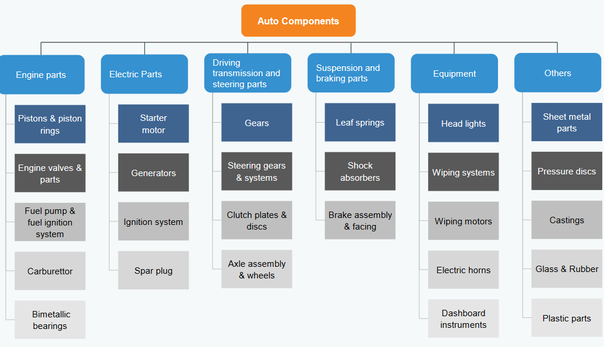
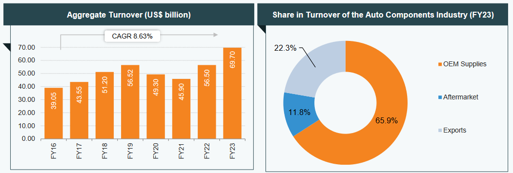
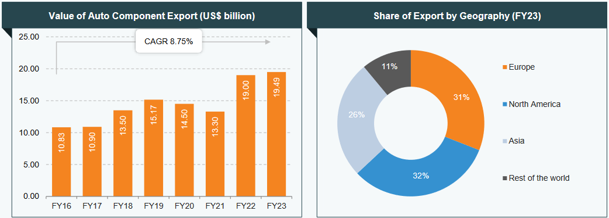
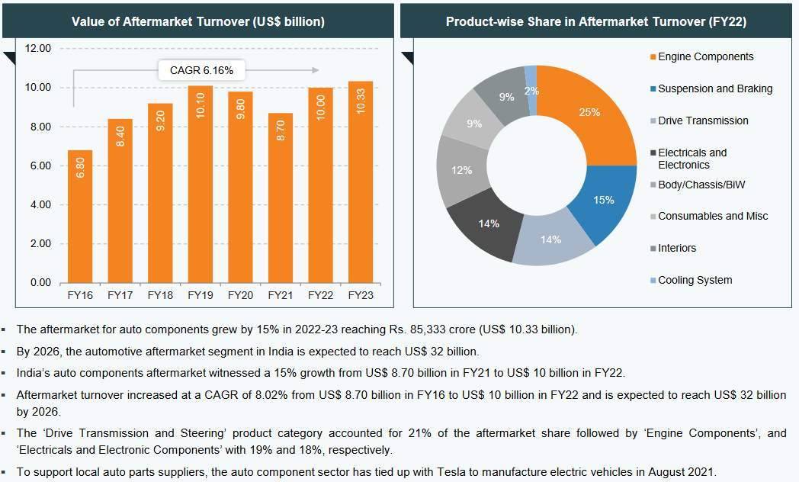
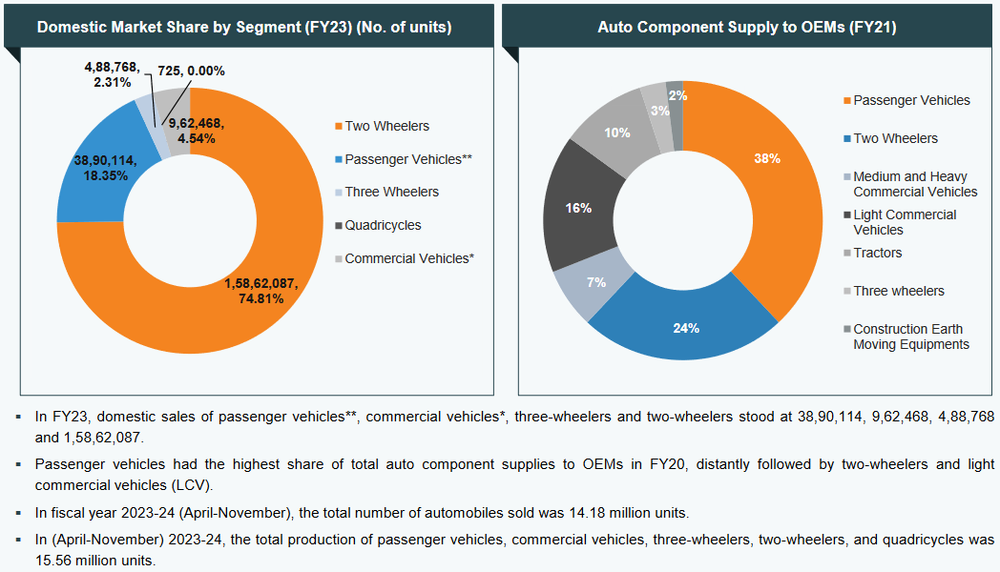
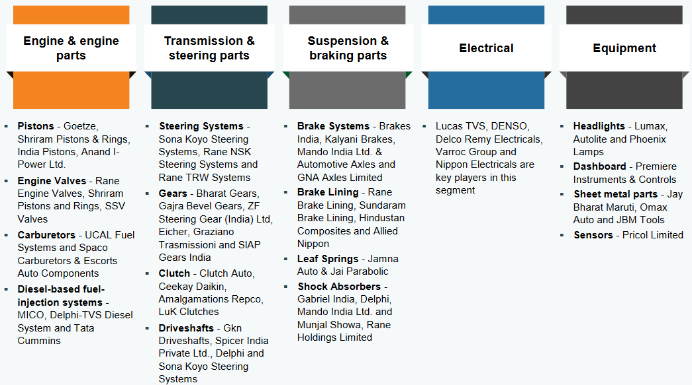

AUTO COMPONENTS
Last updated on: April 29, 2024
Market Scenario
-
The size of this industry in 2024 is $15 billion.
-
The government is taking measures to make it $30 billion by 2026.
-
India is the world’s third-largest automobile market, the largest manufacturer of three-wheelers,
passenger vehicles, and tractors, and the second-largest manufacturer of two-wheelers.
-
The global EV market was estimated at approximately US$ 250 billion in 2021 and by 2028, it is
projected to grow by 5 times to US$ 1,318 billion.
-
By 2030, the Indian government has committed that 30% of the new vehicle sales in India would be
electric.
-
India is on track to become the largest EV market by 2030, with a total investment opportunity of
more than US$ 200 billion over the next 8-10 years.
Product segemnts

Market growth

-
The automobile component industry turnover stood at Rs. 5.6 lakh crore (US$ 69.7 billion) between
2022-23 the industry had revenue growth of 32.8% as compared to 2021-22.
-
Domestic OEM supplies contributed ~66% to the industry’s turnover, followed by domestic aftermarket
(~12%) and exports (~22.3%), in FY23.
-
The component sales to OEMs in the domestic market grew by 39.5% to US$ 57.62 billion
(Rs. 4.76 lakh crore).
-
Between 2022-23, exports of auto components grew by 5.2% to Rs. 1.61 lakh crore (US$ 19.49
billion). As per the Automobile Component Manufacturers Association (ACMA) forecast, automobile
component exports from India are expected to reach US$ 30 billion by 2026. In FY22, India’s auto
component Industry for the first time reached a trade surplus of US$ 700 million.
-
The aftermarket for auto components grew by 15% in 2022-23 reaching Rs. 85,333 crore (US$ 10.33 billion).
Export growth

-
Exports of auto components grew by 5.2% to Rs. 1.61 lakh crore (US$ 19.49 billion) in 2022-23 from
Rs. 1.41 lakh crore (US$ 19 billion) in 2021-22. In 2023-24 (April-July), the export value of auto
components/parts was estimated at US$ 2.46 billion.
-
North America, which accounts for 32% of total exports, increased by 8%, while Europe and Asia,
which account for 31% and 26% of total exports, increased by 3% and 4%, respectively. The key
export items included drive transmission and steering, engine components, body/chassis, suspension
and braking etc.
-
Exports of automobile components from India increased, at a CAGR of 11.89%, from US$ 10.83 billion
in FY16 to US$ 19 billion in FY22.
-
Auto component exports increased by 8.6% in H123 to US$ 9.6 billion (Rs. 79,033 crore) from US$ 8.3
billion (Rs. 68,746 crore) in H1 2021-22.
Aftermarket growth

Shares in production and supply

Major players by segment

Analysis of companies
Goetze piston
- Registered as Federal-Mogul Goetze (India) on BSE.
- Provides pistons to two-wheelers.
- It is the second-largest player with more than 30% market share (FY21) in India's organized market
of pistons/piston rings.
- Pros
- Company is almost debt free.
- Company's working capital requirements have reduced from 39.6 days to 24.8 days
- Cons
- Though the company is reporting repeated profits, it is not paying out dividend.
- The company has delivered a poor sales growth of 4.28% over past five years.
- Company has a low return on equity of 5.85% over last 3 years.
References:
Market scenario, product segments: https://www.ibef.org/industry/autocomponents-india
Goetze piston market share: https://www.screener.in/company/FMGOETZE/consolidated/?order=desc